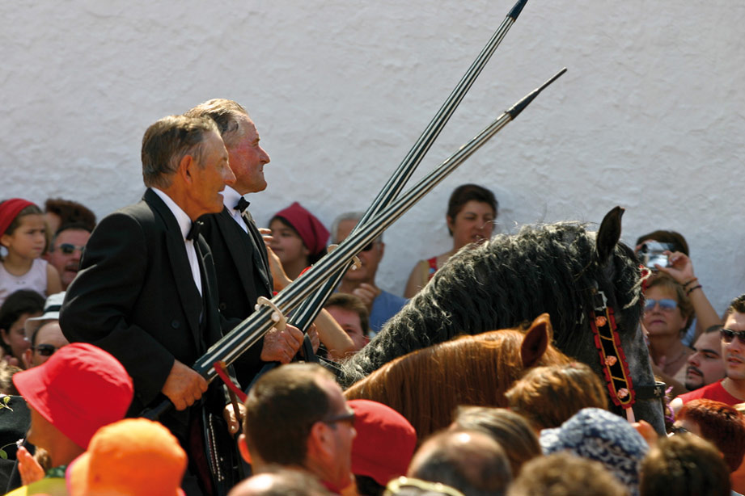

Las Fiestas, the veneration of the horse
 The horse is one of the noblest known animals. The Menorcans know this well and traditionally respect their equines, who have been converted into the centre of their local fiestas. In the summer Menorca merges with its horses and together they celebrate unique fiestas, difficult to describe.
The horse is one of the noblest known animals. The Menorcans know this well and traditionally respect their equines, who have been converted into the centre of their local fiestas. In the summer Menorca merges with its horses and together they celebrate unique fiestas, difficult to describe.
The origin on these celebrations is to be found in Ciutadella. In the XIV century a fund was created for the rural church Sant Joan d´Artrutx, some five kilometres from the city. This organisation included representatives of the different social estates from that time. These were called “Caixers”, who had to ride to the church especially during the vigil of St. John when an official ceremony was celebrated. The tradition was maintained year after year, gradually more acts were added until the present day Sant Joan.
Without doubt these are the most well known fiestas on the island. During June 23rd and 24th Ciutadella is transformed. The streets are decorated and prepared to receive the horses and the “caixers” who revive year after year the centuries old tradition that has become so popular that is followed by thousands of visitors who come from abroad to see the incredible spectacular.
 All the towns in Menorca including some urbanizations celebrate the day of their patron saint and horses are the protagonists. The central part of the fiesta is the “jaleo” when the “caixers” entertain the people by making the horses prance on their hind legs sometimes jumping off the ground, known as a (bot) this is done to the rhythm of the music which, although not original from the island is identified with the essence of Menorca. Today a great many people go to the fiestas impatient to enjoy the horses and riders (caixers), who always follow the “fabioler” the figure who opens the fiestas playing the flute (fabiol).
All the towns in Menorca including some urbanizations celebrate the day of their patron saint and horses are the protagonists. The central part of the fiesta is the “jaleo” when the “caixers” entertain the people by making the horses prance on their hind legs sometimes jumping off the ground, known as a (bot) this is done to the rhythm of the music which, although not original from the island is identified with the essence of Menorca. Today a great many people go to the fiestas impatient to enjoy the horses and riders (caixers), who always follow the “fabioler” the figure who opens the fiestas playing the flute (fabiol).
If you have the chance to visit any of the local fiestas, don´t miss them. Enjoy them with care and feel like just another Menorcan.